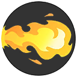

Charizard's Viability Stats:
| Offense | Endurance | Mobility | Scoring | Support |
|---|---|---|---|---|
| 7 | 6 | 5 | 6 | 1 |
Charizard's Stats at Level 15:
| HP | Attack | Defense | Sp. Atk | Sp. Def | Speed |
|---|---|---|---|---|---|
| 7700 | 463 | 350 | 114 | 269 | 3700 |
Charizard's Abilities:
| Level Unlocked | Ability Name | Ability Description | Cooldown | Damage at Level 15 | |
|---|---|---|---|---|---|
| 1 | Flame Burst | Attack with a bursting flame. When this move hits, it leaves enemies burned and increases the user's movement speed for a short time. | 6s | 658 | |
| 1 | Fire Spin | Encircles enemies in the area of effect in a vortex of fire. After this move hits, it deals damage over time and decreases the movement speed of enemies for a short time. | 10s | 2043 | |
|  | 5 | Flamethrower | Attack with an intense blast of fire. When this move hits, it leaves enemies burned and increases the user's movement speed for a short time. | 5.5s | 1162 |
| 5 | Fire Punch | Punch with a fiery fist, dealing damage and shoving enemies when it hits. Also leaves the enemies it shoves burned. | 6s | 1877 | |
| 7 | Fire Blast | Blasts intense, all-consuming fire, dealing damage over time to enemies while the flames continue to burn on the ground and decreasing the movement speed of enemies for a short time. | 8s | 3555 | |
| 7 | Flare Blitz | Charge forward cloaked in fire, granting the user a shield and throwing enemies hit. | 10s | 1085 | |
| 9 | Seismic Slam | Fly up into the air, allowing the user to move freely over obstacles. While this move is being used, basic attacks deal increased damage and leave enemies burned. In addition, when dealing damage to an enemy, recover HP. Using this move again on an enemy will grab it and slam it onto the ground. | Variable | Variable |